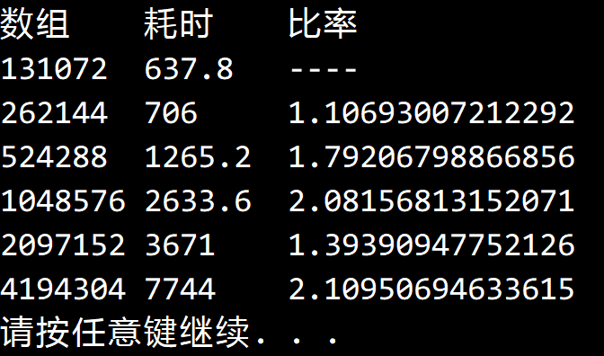

© 2019 《算法（第四版）》C# 题解 | Provided By 沈星繁
搜索解答
目前已完成到 2.5
2.2.22
上次更新：2019-02-13
发现了题解错误/代码缺陷/排版问题？请点这里：如何：提交反馈 。
题目
2.2.22
三向归并排序。
假设每次我们是把数组分成三个部分而不是两个部分并将它们分别排序。
然后进行三向归并。 这种算法的运行时间的增长数量级是多少。
解答

增长数量级为$ O(nlogn) $。
代码
using System;
using System.Diagnostics;
namespace Merge
{
/// <summary>
/// 三向归并排序。
/// </summary>
public class MergeSortThreeWay : BaseSort
{
/// <summary>
/// 默认构造函数。
/// </summary>
public MergeSortThreeWay() { }
/// <summary>
/// 利用三项归并排序将数组按升序排序。
/// </summary>
/// <typeparam name="T">数组中的元素类型。</typeparam>
/// <param name="a">待排序的数组。</param>
public override void Sort<T>(T[] a)
{
T[] aux = new T[a.Length];
Sort(a, aux, 0, a.Length - 1);
Debug.Assert(IsSorted(a));
}
/// <summary>
/// 自顶向下地对数组指定范围内进行三向归并排序，需要辅助数组。
/// </summary>
/// <typeparam name="T">需要排序的元素类型。</typeparam>
/// <param name="a">原数组。</param>
/// <param name="aux">辅助数组。</param>
/// <param name="lo">排序范围起点。</param>
/// <param name="hi">排序范围终点。</param>
private void Sort<T>(T[] a, T[] aux, int lo, int hi) where T : IComparable<T>
{
if (hi <= lo) // 小于或等于一个元素
return;
int lmid = lo + (hi - lo) / 3;
int rmid = hi - (hi - lo) / 3;
Sort(a, aux, lo, lmid);
Sort(a, aux, lmid + 1, rmid);
Sort(a, aux, rmid + 1, hi);
Merge(a, aux, lo, lmid, rmid, hi);
}
/// <summary>
/// 返回两个元素中较小的那个。
/// </summary>
/// <typeparam name="T">比较的元素类型。</typeparam>
/// <param name="a">用于比较的元素。</param>
/// <param name="b">用于比较的元素。</param>
/// <returns>较小的元素。</returns>
private T Min<T>(T a, T b) where T : IComparable<T>
{
if (Less(a, b))
return a;
return b;
}
/// <summary>
/// 将指定范围内的元素归并。
/// </summary>
/// <typeparam name="T">数组元素类型。</typeparam>
/// <param name="a">原数组。</param>
/// <param name="aux">辅助数组。</param>
/// <param name="lo">范围起点。</param>
/// <param name="lmid">范围三分之一点。</param>
/// <param name="rmid">范围三分之二点。</param>
/// <param name="hi">范围终点。</param>
private void Merge<T>(T[] a, T[] aux, int lo, int lmid, int rmid, int hi) where T : IComparable<T>
{
for (int l = lo; l <= hi; l++)
{
aux[l] = a[l];
}
int i = lo, j = lmid + 1, k = rmid + 1;
for (int l = lo; l <= hi; l++)
{
int flag = 0;
if (i > lmid)
flag += 1;
if (j > rmid)
flag += 10;
if (k > hi)
flag += 100;
switch (flag)
{
case 0: // 三个数组都还没有取完
T min = Min(aux[i], Min(aux[j], aux[k]));
if (min.Equals(aux[i]))
a[l] = aux[i++];
else if (min.Equals(aux[j]))
a[l] = aux[j++];
else
a[l] = aux[k++];
break;
case 1: // 只有第一个数组取完了
if (Less(aux[j], aux[k]))
a[l] = aux[j++];
else
a[l] = aux[k++];
break;
case 10: // 只有第二个数组取完了
if (Less(aux[i], aux[k]))
a[l] = aux[i++];
else
a[l] = aux[k++];
break;
case 100: // 只有第三个数组取完了
if (Less(aux[i], aux[j]))
a[l] = aux[i++];
else
a[l] = aux[j++];
break;
case 11: // 第一、二个数组取完了
a[l] = aux[k++];
break;
case 101: // 第一、三个数组取完了
a[l] = aux[j++];
break;
case 110: // 第二、三个数组取完了
a[l] = aux[i++];
break;
}
}
}
}
}